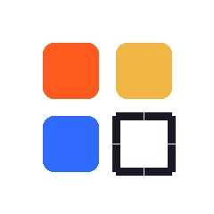

Qutum turns any TV into the board and every phone into a private hand. I built the brand, the product story and the launch content system for Instagram and TikTok.
Start from the problem the person arrived with. Four lenses, in the order I worked through them.
The table is too small. A piece is always missing. Not everyone owns every game, and board games are expensive. Someone ends up reading the rulebook out loud while everyone else checks their phone.
The TV is the board. The phone is the hand.
Every guest already carries a private screen, and the living room already has a shared one. Hidden information (secret roles, bluffs, deals) belongs on the private screens; the board everyone argues over belongs on the big one.
That also moves the one fragile moment, joining, to a single scan.
The product lives or dies in the first two minutes of a session. I would read these before anything else:
No box, no board, no download. A big screen opens a page, phones scan in. Click through the real join flow, and press the buttons on the little phone.
Every game is designed in-house. Tap a cover for the pitch, the three-step round and what your phone shows that nobody else sees.
Catalogue as of the November 2026 build. Games are added over time, so this shelf will grow.
Six steps, in order. The part I like best: the games we chose not to build.
Mechanics are free to learn from. Names, characters, maps and visuals are never copied. Every game starts as “which friction between friends is fun to play with?”: a lie, a deal, a bluff, a bet.
Each game is first written on a single page: the hook line, the three-step round, what the phone hides and what the TV shows. If it does not fit on one page, it will not fit in a first-time player's head.
Before building, I play the game on paper with imaginary players and write down the eight biggest problems and a fix for each. Typical finds: a dominant strategy, the rich getting richer, dead turns for players who are out, rules nobody can explain.
Bots fill empty seats, and they also stress-test the rules: does one strategy always win, does a round drag past its time, can a player get stuck? Bots are why a game can be tested alone and why a table of three still works.
Every game gets one piece of key art and one tagline with a villain in it. The shelf is a store window: the cover and the line have to earn the click on a TV across a room.
A game is only done when it follows the hub's contracts: join by QR, the hub's language, private phone and shared TV views. Then it is a tile on the shelf.
One approved logo, one palette, two typefaces. The logo is also the product instruction.
Click a square. The mark is a 2×2 grid: three seats taken, one left open.
Click a swatch. The contrast line shows where the colour can carry text and where it can only decorate.
Talks like a group chat.“That one friend reading the rulebook out loud.”
Leads with a friction everyone has lived.“Group chat: we should hang out and play something. Also group chat: [seen].”
One line per game, with a villain.“Bribe the right people. Tip off the rest.”
Captions in English, then Turkish.Same joke, two languages, one link.
Never “revolutionise game night”.The jokes do the pitching, the logo does the explaining.
Never explain rules in the feed.The feed earns the scan. Rules live in the game.
Never promise what is not shipped.The TV app is coming, and the posts say coming.
Two channels, one idea per post, and a profile that answers “how do I start” without scrolling.
A 10-day countdown (Dec 1 to 10) so launch is not a cold start, then ten days of memes, game cards and carousels at 19:00. Four Highlights (how 2 play, who are u, banned rn, 12 langs) answer the first-visit questions.
The same vertical videos as Reels, from Dec 11. Every video has three beats: the friction, the fix, the scan. Music on, text large enough to read muted.
Click any piece. Each one opens with the reason it exists.

Board game night without the box. Board on the TV, cards on your phone. No install. Play 👇
No performance numbers yet, on purpose: the social launch is Dec 11, 2026. I will add what moved once there is something real to report.
Click a block. The whole thing is deliberately small: no framework, no database, nothing to install on the TV.